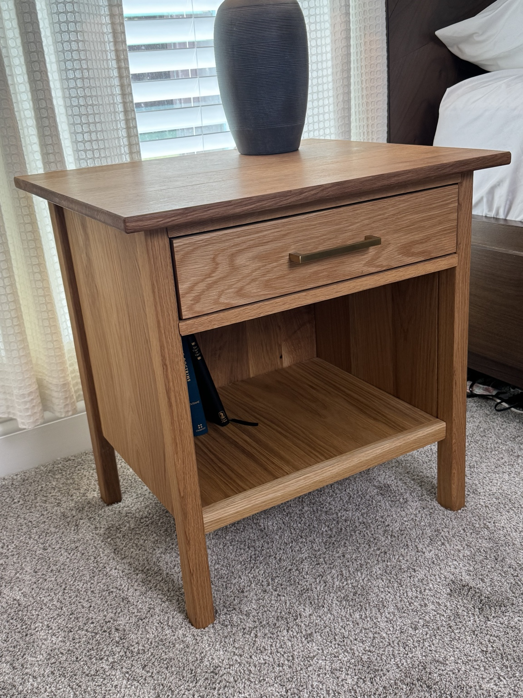
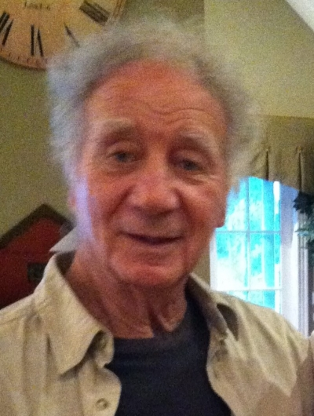

I needed to
learn first.
I wanted to teach my son how to use tools. There was just one problem: I needed to learn how to use them myself.
01 · Getting started
A son on the way.
A bookcase to build.
When we were getting ready to have our first son, who’s now four, I started thinking about the things I wanted to teach him. Using tools was one of them.
I also wanted a bookcase for my office. So, naturally, I bought a table saw and a few other tools and started learning.
I didn’t know much. I had something I wanted to make, and that gave me a reason to figure it out.
02 · Learning from others
A lot of YouTube.
Steve Ramsey, Bent’s Woodworking, and 731 Woodworks helped me get started. I watched their videos, tried what I learned, and kept coming back with more questions.
Bourbon Moth, Jon Peters, Keith Johnson, Michael Alm, Mike Farrington, Northeast Woodworks, Timber Biscuits, and plenty of others showed me what I wanted to work toward.
Some helped me understand how to do the work. Others made me want to get better at it.
03 · Seeing the progress
Two builds that changed things.
The white oak nightstands were the first project where I stepped back and was impressed with what I’d made. They challenged me, and I could see how much my skills had improved.
The hall tree was my biggest project. When I finished it, I started thinking I could actually do something with this skill.
That’s what got this started: building more, sharing the process, and seeing where it could go.
See the builds ↗

04 · The family name
DiSibio Builders.
DiSibio Builds.
My grandfather and his father started DiSibio Builders when they came to the United States from Italy. They built houses for a living, including the house I grew up in.
DiSibio Builds is a nod to their work and our family history.
The photo here is my late grandfather. He’s the reason behind the name.

05 · Four letters
What does DCBO mean?
That came from my grandma. Say the four letters quickly—D, C, B, O—and it sounds like DiSibio.
My siblings and I have used that abbreviation everywhere for years. Keeping it in the logo felt natural. It’s another piece of the family in the name.
06 · What I’m building now
Furniture for our home.
Then a little further.
Much of what I make is for the home we bought six years ago. Almost every room now has a piece of furniture I built.
I’m starting to build out my workshop, but the work I most want to do is finer furniture in walnut, white oak, cherry, and maple.
You’ll see a mix here: cabinetry, hardwood furniture, painted furniture, and whatever else we need. Soon, I plan to take on more projects for family, friends, and clients.
I also want to get better at telling the story of each build as I go—the decisions, the problems, and what I learn along the way.

07 · Bringing work into the workshop
Software experience.
Shop problems.
I’ve worked in software for more than 12 years. My experience using AI at work has started to carry over into woodworking, too.
I’m not a designer, and I don’t use SketchUp or CAD. I use ChatGPT, Claude, and other tools to help me work through concepts, designs, and cut lists when I need them.
It’s become part of how I plan a project and figure out the next step.
Follow the next build.
I’m learning as I go. If you want to see what I make next, come along.